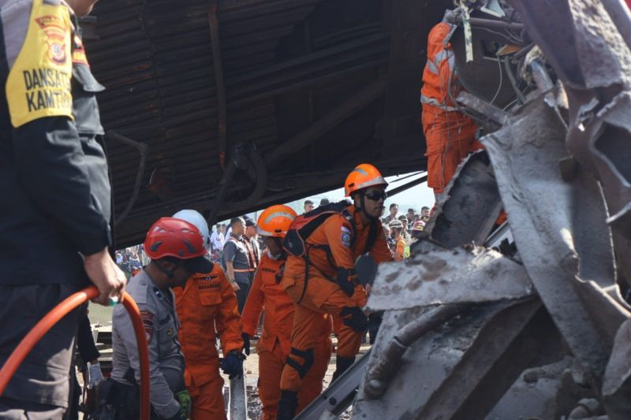

Kereta Api Kecelakaan di Cicalengka
ditulis oleh Faizal Akbar Budiansyah pada 1 januari 2020
Saat tabrakan kereta terjadi pada Jumat (05/01), Commuter Line Bandung Raya baru saja meninggalkan Stasitun Haurpugur dan tengah menuju tujuan akhirnya di Stasiun Cicalengka. Sementara itu, Kereta Api Turangga sudah melewati Stasiun Garut dan dalam perjalanan ke Stasiun Bandung. Humas Daop 2 Bandung Ayep Hanapi berkata, dua kereta ini bertabrakan di petak jalan antara Stasiun Haurpugur dan Stasiun Cicalengka pada pukul 06.03 WIB. Tabrakan terjadi di jalur tunggal. Dalam prosedur lalu lintas di jalur Haurpugur-Cicalengka, hanya satu kereta yang boleh melintas di jalur tunggal itu.
Ayep berkata, jalur tunggal itu diprioritaskan untuk kereta jarak jauh. Artinya, kereta lokal harus berhenti dan menunggu jalur itu kosong.
"Kereta lokal menunggu di stasiun, setelah kilometer aman barulah kereta itu boleh melanjutkan perjalanan," ujar Ayep.
"Intinya untuk jalur Cicalengka-Haurpugur, dalam satu petak jalan hanya boleh ada satu kereta api," ucapnya.
Pengaturan lalu lintas di jalur ini dikoordinasikan oleh seorang pemimpin perjalanan kereta api (PPKA).
Namun hingga saat ini, PT KAI menyatakan belum bisa menyimpulkan penyebab tabrakan antara KA Turangga dan kereta Commuter Line Bandung Raya. Kesimpulan soal insiden ini harus menunggu investigasi dari Komite Nasional Keselamatan Transportasi (KNTK), kata Ayep Hanapi.
Jumlah korban Jiwa

Pada Jumat (05/01) malam, Direktur Jenderal Perkeretapian, Risal Wasal, melaporkan bahwa korban meninggal yang sudah teridentifikasi berjumlah empat orang, sementara 37 orang dalam kondisi luka.
Dia memastikan tak ada korban jiwa dari pihak penumpang.
"Korban meninggal terdiri dari satu orang masinis, satu orang asisten masinis, satu orang petugas keamanan Stasiun Cimekar, serta satu orang prama KA Turangga," ujar Risal dalam pernyataan tertulis yang diterima BBC News Indonesia, Jumat (05/01) malam.
Sebelumnya, Polda Jawa Barat melaporkan terdapat setidaknya tiga korban tewas akibat kecelakaan ini. Tiga korban itu adalah masinis dan asisten masinis kereta Commuter Line Bandung Raya serta seorang pramugara di KA Turangga.
Namun sekitar pukul 11.30 WIB, muncul perkembangan terbaru soal jumlah korban tewas ini. Menteri Koordinator Bidang Pembangunan Manusia dan Kebudayaan, Muhadjir Effendy, yang berada di lokasi kejadian, menyebut korban yang sudah dipastikan tewas berjumlah dua, yaitu masinis dan asisten masinis kereta Commuter Line Bandung Raya.